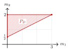

Example 12.1.6. We give a surface example in which $P_ D$ is not a lattice polytope. Let $\Sigma $ be the fan in $N_{\mathbb {R}}\simeq \mathbb {R}^2$ whose rays are generated, in cyclic order, by
\[ u_{\rho _1}=(1,0),\quad u_{\rho _2}=(0,1),\quad u_{\rho _3}=(-1,2),\quad u_{\rho _4}=(0,-1). \]
The corresponding smooth projective toric surface is the Hirzebruch surface $\mathbb {F}_2$. Consider the toric Cartier divisor
\[ D=-D_{\rho _3}+2D_{\rho _4}. \]
Thus
\[ a_{\rho _1}=a_{\rho _2}=0,\quad a_{\rho _3}=-1,\quad a_{\rho _4}=2. \]
Hence
\[ P_ D=\left\{ m=(m_1,m_2)\in M_{\mathbb {R}}: m_1\geq 0,\ \frac{m_1+1}{2}\leq m_2\leq 2 \right\} . \]
See 12.5.

Comments
Corrections, questions, and mathematical discussion are welcome. Sign in with GitHub to comment. Comments are public.